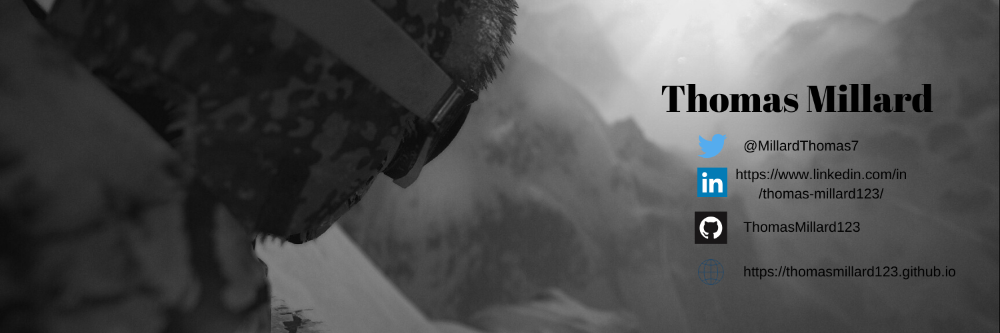

Intro
Hello, on this website you can check out my work and find out a bit about me . There are also links to my social media below. this my twitter, LinkedIn and GitHub.
Hello, on this website you can check out my work and find out a bit about me . There are also links to my social media below. this my twitter, LinkedIn and GitHub.
This is the projects I have done and projects I am currently doing.
This game is inspared by the game Pacman it is for my university assignment.This is done using the inhouse framwork S2D and C++. It has:


You can find it at:Pacman
C++|Games Proggraming|S2D|2D
Unfinished!This game is based on the early versions of Mario and it is being create for a university assignment. It has been created with C++ and SDL. It Currently has:
You can find it at:Mario
C++|Games Proggraming|SDL|2D

Unfinished!This is university project using openGL and C++ to render a 3D scene. I plan to come up with a tile in the future. It currently has:
You can find it at:OpenGL-Project
C++|Games Proggraming|OpenGL|freeGLUT|3D
Hello there, my name is Thomas Millard. Welcome to this website. I am a student at Staffordshire University doing a BSc (Hons) Video games programming. I hope one day I will be able to be programming video games.
Through my time in education I have learned coding language such as HTML, CSS, C#, JavaScript. I am currently learning C++ in my university studies.
Things I enjoy are video games and watching esports. The main games I like to play now are LoL (League of legends), Pokémon sword and shield and battlefield V. My favoritegame of all time could be Left for Dead 2 but other games that come close would be trove, just cause 2 multiplayer and GTA5(Grand Theft Auto v). Skiing is also something else I do.